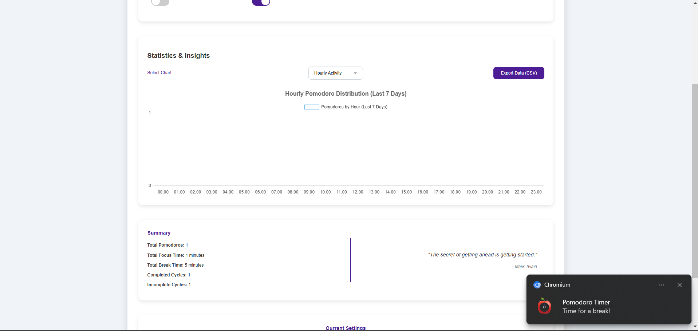

Aesthetic Pomodoro Timer
Technologies Used
- JavaScript
- CSS3
- HTML5
Strengths
- Published
- Positive feedback from users
- Small activity
Weaknesses
- Architecture
- Performance
- Lack of unit tests
Explored
- Data analytics
- Audio notification
- Custom components
- User interface
Description
The idea of the Aesthetic Pomodoro Timer came a few months after using other Pomodoro timers that didn't have the features I required. I always felt limited and couldn't imagine the only Pomodoro timer I knew and enjoyed would suddenly feel like that. So, I tried my best to take what made that a great tool and focused on the ability to add more customization. While being a project on my spare time, I still try to provide something as professional as possible. I am also open to suggestions.
Currently, some brainstorming is happening for a rewrite with better architecture, improved performance, and an improved user interface.